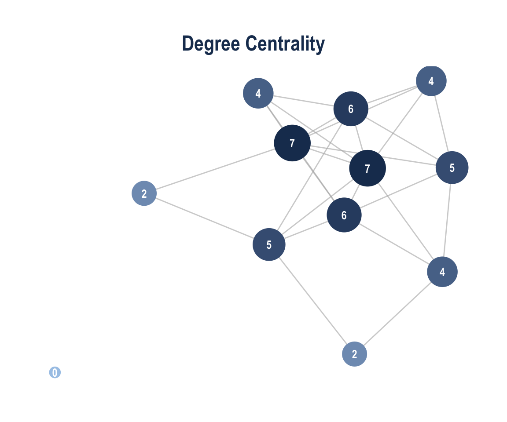
A Brief Intorduction
2026-04-28
A network or graph is a set of nodes or vertices connected by edges.
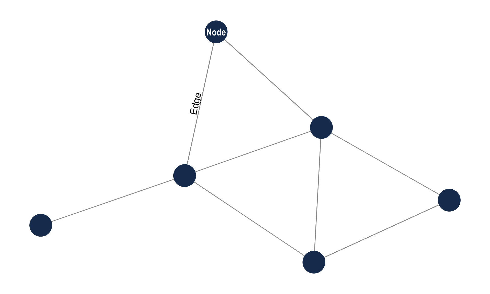
| Network | Node | Edge |
|---|---|---|
| Internet | Computer or router | Cable or wireless data connection |
| World Wide Web | Web page | Hyperlink |
| Citation network | Article, patent, or legal case | Citation |
| Power grid | Generating station or substation | Transmission line |
| Friendship network | Person | Friendship |
| Metabolic network | Metabolite | Metabolic reaction |
| Neural network | Neuron | Synapse |
| Food web | Species | Predation |
Networks are a conceptual framework. Many systems may be formatted as networks.
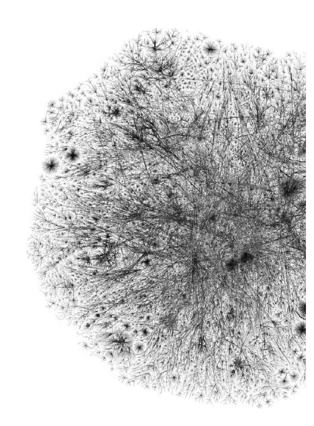
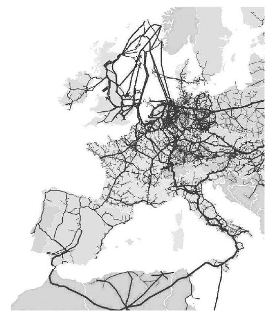
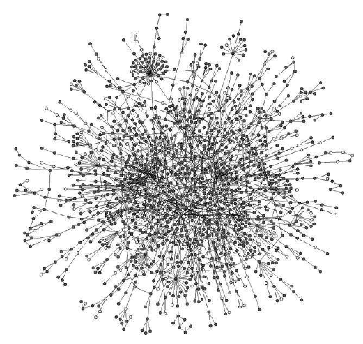
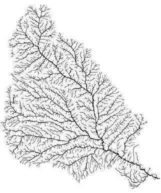
We can learn about network structure to gain insight about function:
Observational Data
Experimentation
Mechanistic / Physical Properties

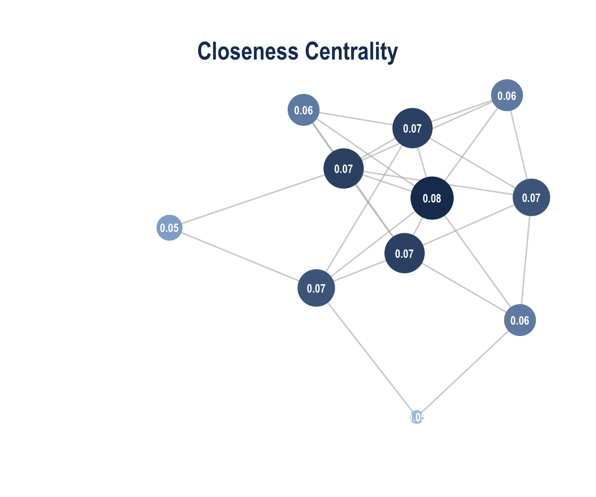
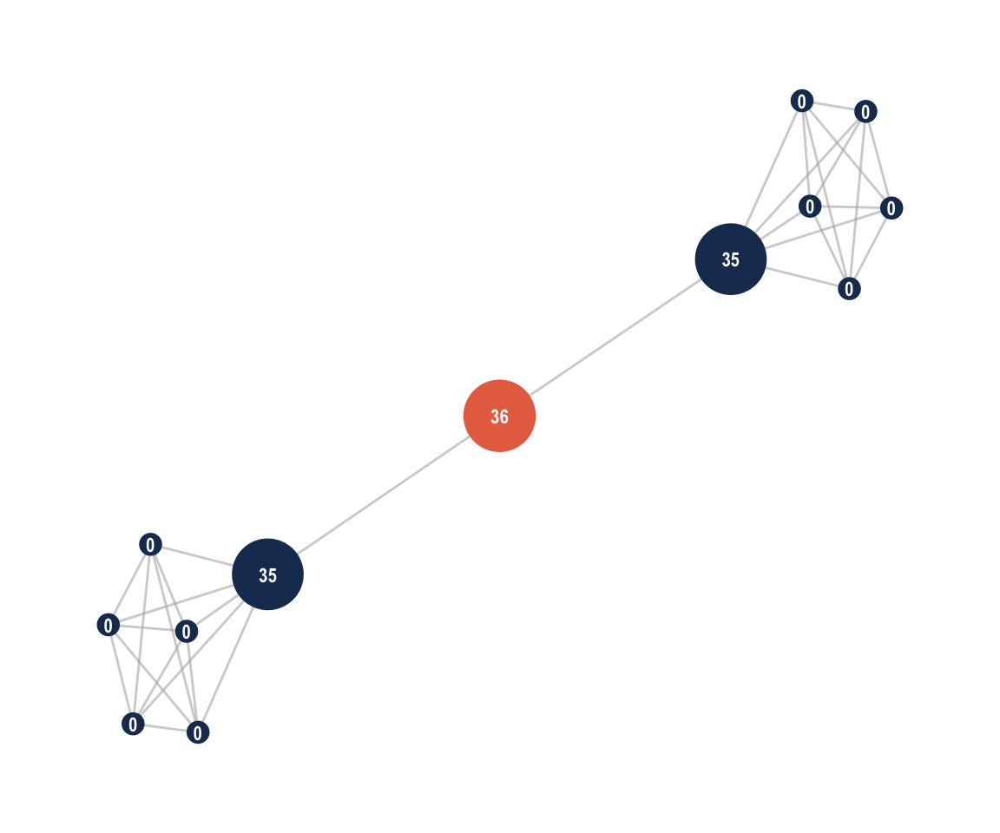
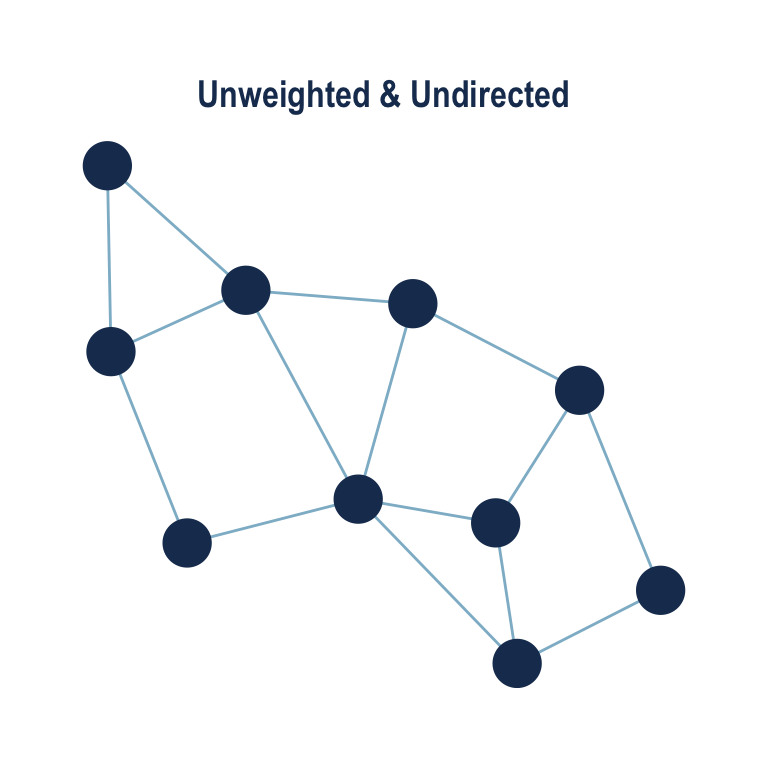
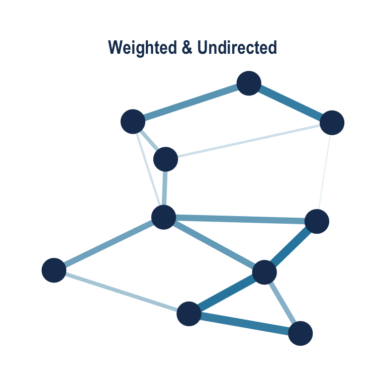
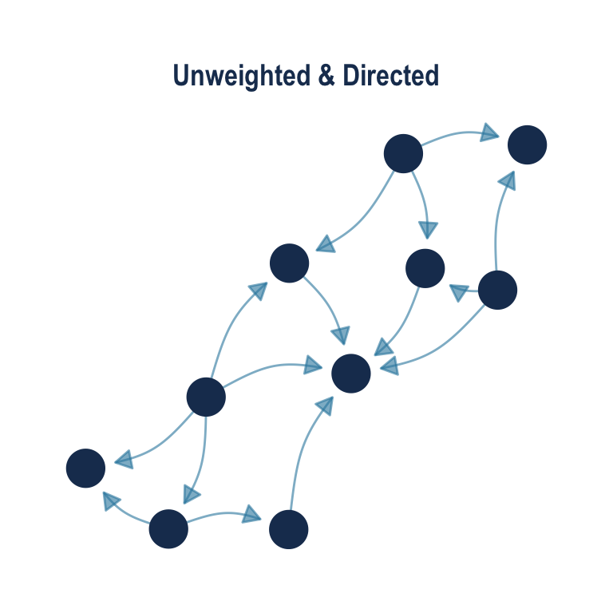
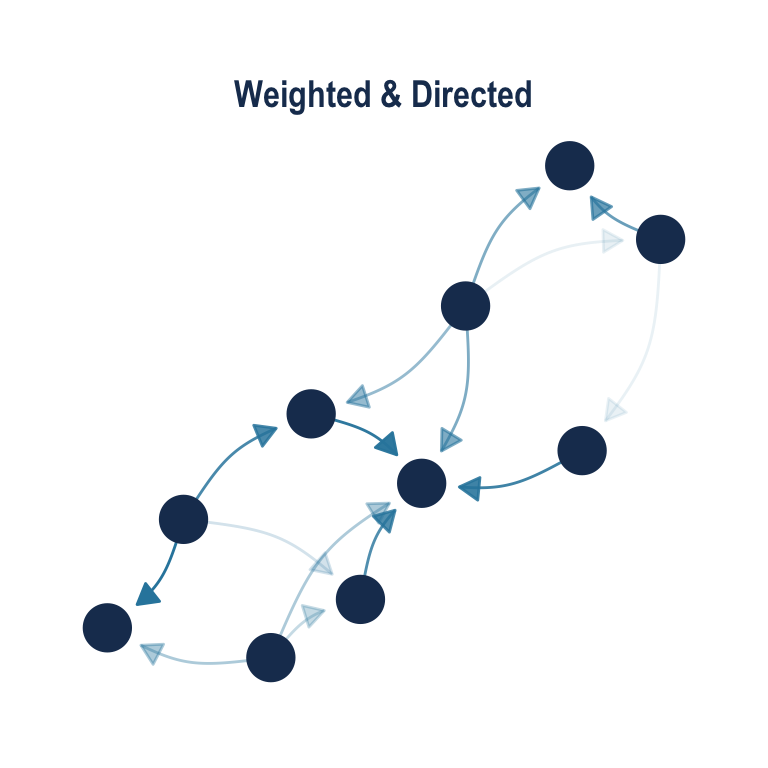
Edge list
| node_from | node_to | weight |
|---|---|---|
| A | B | 0.8 |
| A | C | 0.3 |
| B | D | 0.5 |
| C | D | 0.7 |
Adjacency matrix
| A | B | C | D | |
|---|---|---|---|---|
| A | 0 | 1 | 1 | 0 |
| B | 1 | 0 | 0 | 1 |
| C | 1 | 0 | 0 | 1 |
| D | 0 | 1 | 1 | 0 |
Considerations when storing networks:
| Package | Role |
|---|---|
igraph |
Core graph operations, algorithms |
tidygraph |
Tidy/dplyr-style network manipulation |
ggraph |
ggplot2-based network visualization |
| Statnet | Collection of many analysis tools |
visNetwork |
Interactive network visualization |
ggraph#We are doing something random so set seed
set.seed(404)
#How many nodes?
n <- 10
#Generate a random graph
g <- play_gnp(10, 0.15) |>
mutate(name = LETTERS[1:n])
#Plot it with ggraph
ggraph(g, layout = "auto") +
geom_edge_link(color = "gray") +
geom_node_point(size = 15, color = "#1C3A5E") +
geom_node_text(aes(label = name), color = "white", fontface = "bold", size = 5) +
theme_graph()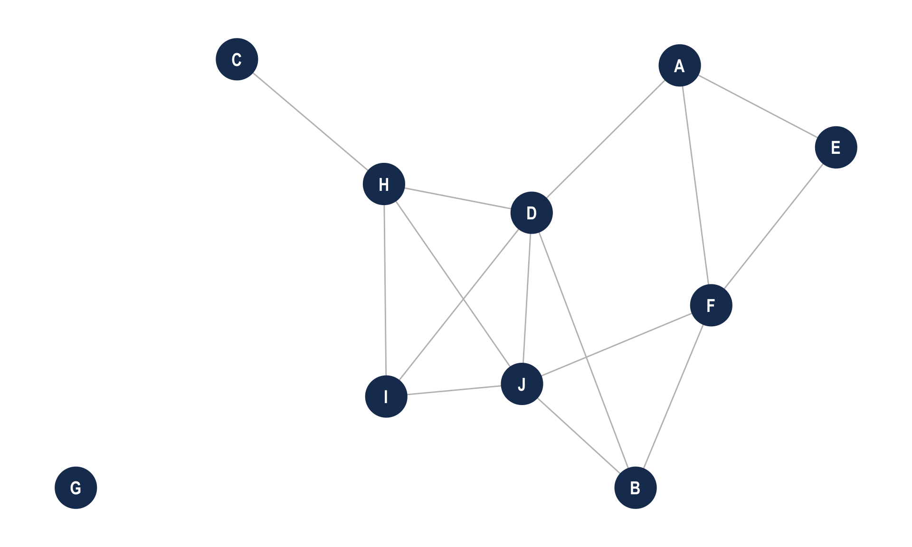
Most data have a natural geometry:
Networks are often isomorphic, meaning that the same network may be layed out in different ways.
Common layouts and when to use them:
ggraph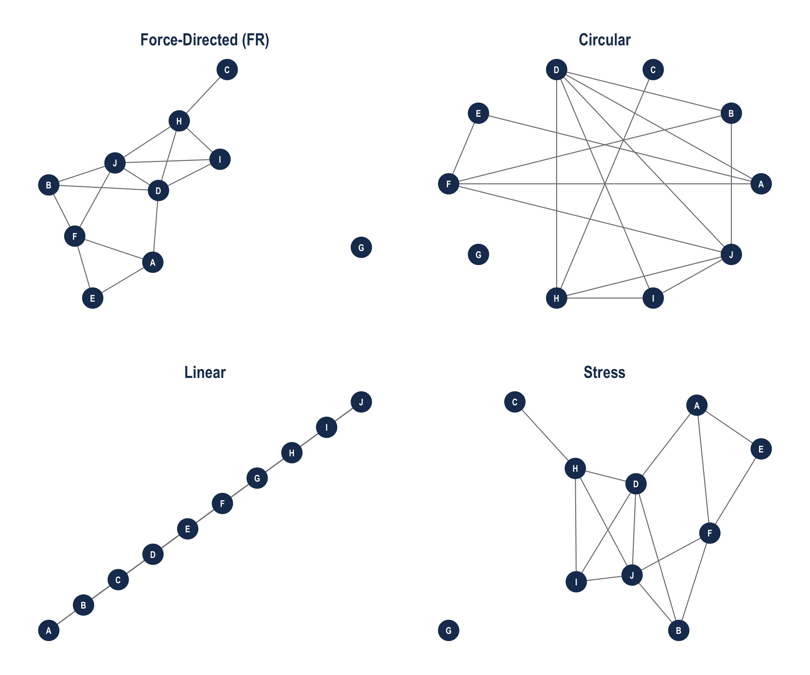
Node Attributes geom_node_point()
| Attribute | Values |
|---|---|
| Size | Numeric |
| Color (fill) | Continuous / Categorical |
| Color (border) | Continuous / Categorical |
| Shape | Categorical |
| Label | Character |
| Label size | Numeric |
| Opacity | 0 to 1 |
Edge Attributes geom_edge_link()
| Attribute | Values |
|---|---|
| Width | Numeric |
| Color | Continuous / Categorical |
| Opacity | 0 to 1 |
| Line type | Solid / Dashed / Dotted |
| Label | Character |
| Label size | Numeric |
| Direction | Arrow / None |
| Curvature | Numeric |
Stripe Rust (Puccinia striiformis) is a fungal pathogen of wheat that:
Research Goal: Determine the epidemic source
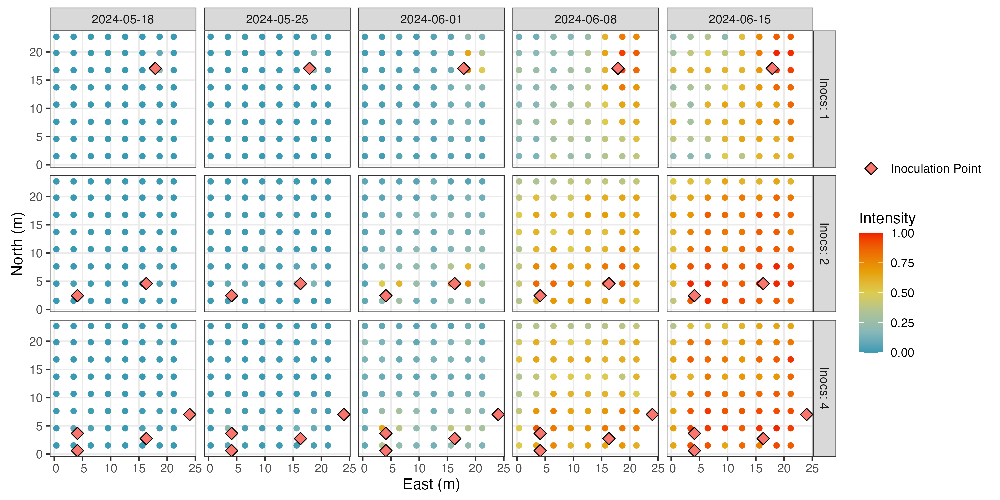
The spread of disease between sample locations can be represented as a directed, weighted network:
Nodes: Sample locations on a spatial grid
Edges: Transmission between locations
Edge weight: Probability of transmission driven by wind direction, distance, and disease intensity at the previous timepoint.
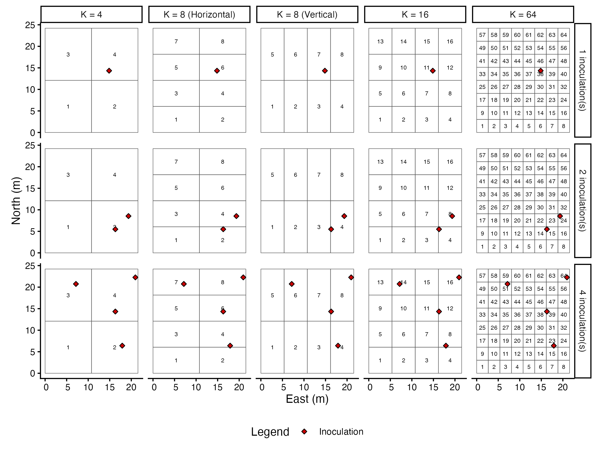
After fitting the model, we summarize transmission probabilities as a component-level probability matrix:
\[ \mathbf{S} = \begin{pmatrix} 0.72 & 0.12 & 0.09 & 0.07 \\ 0.08 & 0.65 & 0.18 & 0.09 \\ 0.05 & 0.14 & 0.71 & 0.10 \\ 0.06 & 0.08 & 0.11 & 0.75 \end{pmatrix} \]
Rows = infected component
Columns = source component
\(S_{kk}\) = probability of self-infection
\(S_{kj}\) = probability of cross-infection from component \(j\)
A single prediction is is obtained by taking the maximum
This matrix is the network we want to visualize.
Here are my current visualizations from the project:
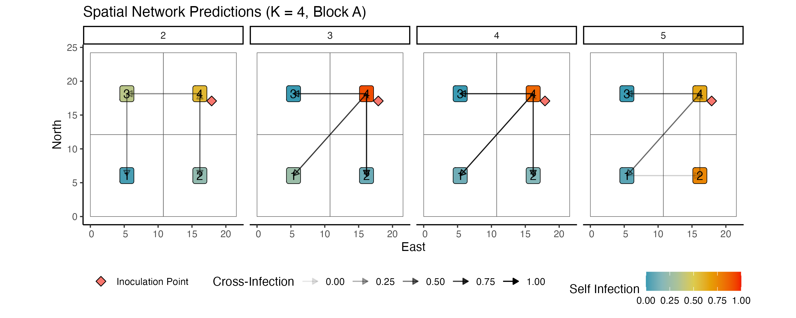
Some things I’m unsure about:
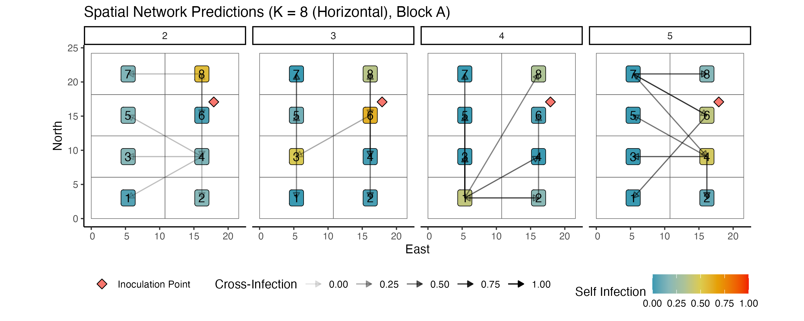
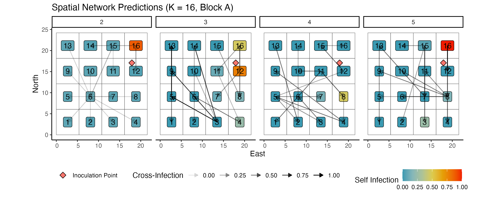
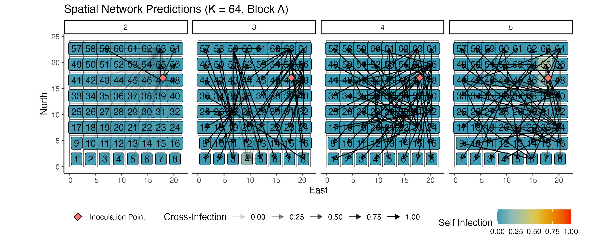